OI Wiki · prijevod · PretraživanjeOI Wiki · translation · Search
Alpha–beta odsijecanjeAlpha–beta pruning
Sadržaj
Ova stranica kratko predstavlja algoritam Minimax i alpha–beta odsijecanje.
Algoritam Minimax
Algoritam Minimax, zvan i algoritam minimizacije maksimuma, algoritam je koji minimizira potencijalni gubitak u najgorem (tj. najvećem gubitku) slučaju.
Postupak
U igrama dvaju igrača s nultom sumom i potpuno određenim pozicijama često se provodi protivničko pretraživanje: gradi se stablo pretraživanja u kojem je svaki čvor jedno određeno stanje. Na neparnim razinama na potezu smo mi, a na parnim protivnik. Svakom listu stabla pridružuje se procjena; što je procjena veća, veće su naše šanse za pobjedu. Mi težimo većim šansama, a protivnik ih nastoji smanjiti; na stablu pretraživanja to znači da čvorovi na neparnim razinama (naši čvorovi) uvijek biraju stanje djeteta s najvećim šansama, a čvorovi na parnim razinama (protivnikovi čvorovi) uvijek biraju stanje djeteta s najmanjim (našim) šansama.
Algoritam Minimax obilazi stablo pretraživanja odozgo prema dolje, pri povratku ažurira odgovor informacijama iz podstabala i na kraju dobiva vrijednost korijena — to je najveći rezultat koji možemo postići ako obje strane igraju optimalno.
Primjer
Pogledajmo jednostavan primjer.
Nazovimo nas MAX, a protivnika MIN; slika je sljedeća:
Na primjer, u sljedećoj situaciji, pretpostavimo da pretražujemo slijeva nadesno, a vrijednost korijena su naše šanse za pobjedu:
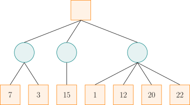
Trebamo odabrati srednji put. Naime, odaberemo li lijevi put, najlošije šanse su \(3\); odaberemo li srednji, najlošije šanse su \(15\); odaberemo li desni, najlošije šanse su \(1\). Iako desni put možda nudi šanse \(22\), dovoljno racionalan protivnik ostavit će nam šanse samo \(1\). Nakon odvagivanja, očito je srednji put bolji.
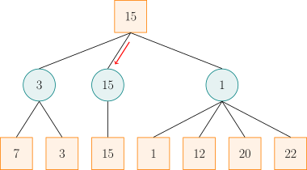
Zapravo, pri razmatranju desnog puta, čim otkrijemo da šanse mogu biti \(1\), ne moramo više gledati grane sa šansama \(12\), \(20\) i \(22\). Naime, u usporedbi sa šansama dvaju lijevih putova već možemo zaključiti da desni put nije najbolji.
Naivni algoritam Minimax često mora izgraditi golemo stablo pretraživanja, pa vremenska i prostorna složenost postaju neprihvatljive. Alpha–beta odsijecanje metoda je koja Minimax optimizira odsijecanjem pomoću donjih i gornjih granica rezultata obiju strana u svakom čvoru stabla.
Treba napomenuti da u različitim problemima vrijednosti u čvorovima stabla pretraživanja imaju različita značenja: može biti procjena, rezultat, vjerojatnost pobjede itd. Radi jednostavnosti u nastavku ih sve zovemo rezultatima.
Alpha–beta odsijecanje
Alpha–beta odsijecanje jest odsijecanje pretraživanja za algoritam Minimax.
Postupak
U algoritmu Minimax, ako znamo rezultate sve djece nekog čvora, možemo izračunati rezultat tog čvora: za MAX čvor uzimamo najveći rezultat, a za MIN čvor najmanji.
Kad pretraživanje dođe do nekog čvora, ali još nije završeno, ne možemo izračunati rezultat tog čvora, ali možemo izračunati raspon rezultata obiju strana među dosad pretraženim čvorovima. Tijekom pretraživanja održavamo dvije varijable, \(\alpha\) i \(\beta\), koje označavaju donju i gornju granicu rezultata koje, kad igra dođe do tog čvora, uzimajući u obzir sve dosad pretražene čvorove, mogu jamčiti igrač Alpha (onaj koji traži najveći rezultat) odnosno igrač Beta (onaj koji traži najmanji rezultat).
Strategija alpha–beta odsijecanja ovisi o vrijednostima \(\alpha\) i \(\beta\) pri pretraživanju trenutnog čvora. Ako je trenutni čvor MAX čvor, igrač Alpha može nastaviti pretraživati njegovu djecu kako bi povećao donju granicu rezultata \(\alpha\). No ako nakon nekog pretraživanja već vrijedi \(\alpha\ge\beta\), daljnje pretraživanje tog čvora ne utječe na ishod igre: čim dođe do tog čvora, igrač Alpha može jamčiti rezultat od barem \(\alpha\); ali igrač Beta već zna da postoji strategija (koja odstupa od trenutnog puta) koja jamči rezultat ne veći od \(\beta\le\alpha\), pa igrač Beta nema razloga dopustiti da igra dođe do trenutnog čvora. Slično, ako je trenutni čvor MIN čvor i nakon pretraživanja nekog njegovog djeteta već vrijedi \(\beta\le\alpha\), također ne treba pretraživati ostalu djecu, jer igrač Alpha nema razloga dopustiti da igra uđe u trenutni čvor. Sažimajući oba slučaja vidimo: kad je \(\alpha \geq \beta\), preostale grane tog čvora ne treba dalje pretraživati (tj. može se odsijecati). Uočite da se odsijecati može i kad je \(\alpha = \beta\), jer protivnik već ima alternativu koja mu jamči rezultat ne lošiji od \(\alpha\) (tj. \(\beta\)), pa daljnje pretraživanje preostalih grana ne mijenja rezultat čvorova iznad.
Tijekom pretraživanja ne treba održavati rezultate čvorova; dovoljno je održavati \(\alpha\) i \(\beta\). Na početku postavimo \(\alpha=-\infty,~\beta=+\infty\). Pri spuštanju prosljeđujemo informacije \(\alpha\) i \(\beta\) prema dolje, kako bismo zabilježili alternative obaju igrača.
Kad je dijete pretraženo, treba ažurirati informacije u trenutnom čvoru. Pretpostavimo da je trenutni čvor \(X\) MAX čvor i da smo upravo pretražili njegovo dijete \(Y\). Tada se vrijednost \(\beta\) u čvoru \(X\) ne mijenja; samo vrijednost \(\alpha\) treba uzeti kao maksimum s rezultatom djeteta \(Y\). Ako je dijete \(Y\) list, izravno rezultatom djeteta \(Y\) ažuriramo vrijednost \(\alpha\) u trenutnom čvoru \(X\); inače je dovoljno vrijednošću \(\beta\) djeteta \(Y\) ažurirati vrijednost \(\alpha\) trenutnog čvora \(X\). Tada postoje tri mogućnosti:
- Vrijednost \(\beta\) djeteta \(Y\) strogo je između vrijednosti \(\alpha\) i \(\beta\) čvora \(X\). Budući da je dijete \(Y\) naslijedilo vrijednost \(\alpha\) čvora \(X\) i ne ažurira je, nakon pretraživanja djeteta \(Y\) i dalje vrijedi \(\beta > \alpha\), što znači da pri pretraživanju djeteta \(Y\) nije bilo odsijecanja. Konačna vrijednost \(\beta\) djeteta \(Y\) jednaka je najmanjoj od vrijednosti: naslijeđene vrijednosti \(\beta\) čvora \(X\) i rezultata sve djece (djeteta \(Y\)). Budući da je ta najmanja vrijednost strogo manja od vrijednosti \(\beta\) čvora \(X\), ona je sigurno najmanji rezultat sve djece djeteta \(Y\). Zato je, kao MIN čvor, rezultat djeteta \(Y\) upravo ta vrijednost \(\beta\). Ažurirati njome vrijednost \(\alpha\) čvora \(X\) je opravdano.
- Vrijednost \(\beta\) djeteta \(Y\) jednaka je vrijednosti \(\beta\) čvora \(X\). Kao što je gore rečeno, to znači da rezultati sve djece djeteta \(Y\) nisu manji od vrijednosti \(\beta\) čvora \(X\). To dalje znači da igrač Beta nema razloga dopustiti da igra uđe u čvor \(X\): čim igrač Alpha odabere dijete \(Y\), igrač Beta ne može postići rezultat manji od \(\beta\). Zato se u tom slučaju vrijednošću \(\beta\) djeteta \(Y\) ažurira vrijednost \(\alpha\) čvora \(X\) kako bi u čvoru \(X\) vrijedilo \(\alpha=\beta\) i aktivirao se uvjet odsijecanja. Učinak je isti kao da smo vrijednost \(\alpha\) čvora \(X\) ažurirali stvarnim rezultatom u \(Y\) — brojem većim ili jednakim vrijednosti \(\beta\) u čvoru \(X\).
- Vrijednost \(\beta\) djeteta \(Y\) manja je ili jednaka vrijednosti \(\alpha\) čvora \(X\). Tada je dijete \(Y\) aktiviralo uvjet odsijecanja; njegov stvarni rezultat ne premašuje vrijednost \(\beta\) djeteta \(Y\), a tim manje vrijednost \(\alpha\) čvora \(X\). Ažuriranje vrijednosti \(\alpha\) čvora \(X\) stvarnim rezultatom djeteta \(Y\) ne mijenja vrijednost \(\alpha\). To ima isti učinak kao ažuriranje vrijednosti \(\alpha\) čvora \(X\) vrijednošću \(\beta\) djeteta \(Y\).
Ova analiza pokazuje da nakon završetka pretraživanja nekog djeteta samo u prvom slučaju \(\alpha\) (ili \(\beta\)) točno bilježi stvarni rezultat tog djeteta kao MAX čvora (ili MIN čvora). U ostalim slučajevima to nije nužno točan rezultat, ali informacija koju daje dovoljna je da jamči ispravno odsijecanje, pa ne utječe na rezultat zabilježen u korijenu.
Primjer
U ovom odjeljku analizom primjera pokazujemo kako se tijekom pretraživanja ažuriraju vrijednosti \(\alpha\) i \(\beta\) u pojedinim čvorovima. Usput računamo i rezultate uključenih čvorova. Tako možemo promatrati odnos između stvarnog rezultata svakog čvora i zabilježenih vrijednosti \(\alpha\) i \(\beta\). No treba imati na umu da se pri implementaciji algoritma stvarni rezultati tih čvorova ne računaju.
Za sljedeću situaciju pretpostavimo da pretražujemo slijeva nadesno:
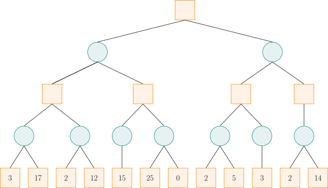
Pri inicijalizaciji postavimo \(\alpha = -\infty,~\beta = +\infty\) i te informacije prosljeđujemo dolje duž puta pretraživanja.
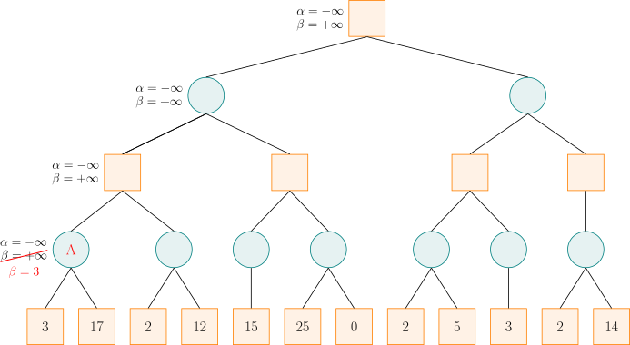
Kad pretraživanje dođe do čvora A, budući da je rezultat lijevog djeteta \(3\), a čvor A je MIN čvor koji traži potez s manjim rezultatom, vrijednost \(\beta\) mijenjamo u \(3\), jer je \(3\) manje od trenutne vrijednosti \(\beta\) (\(\beta = +\infty\)). Zatim je rezultat desnog djeteta čvora A \(17\); tada ne mijenjamo vrijednost \(\beta\) čvora A, jer je \(17\) veće od trenutne vrijednosti \(\beta\) (\(\beta = 3\)). Sad su sva djeca čvora A pretražena, pa možemo izračunati da je rezultat čvora A \(3\), što se podudara s vrijednošću \(\beta\) zabilježenom u tom čvoru (slučaj 1 iz prethodnog teksta).
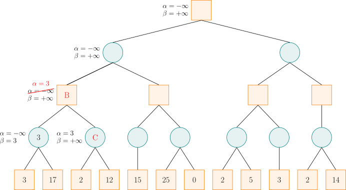
Čvor A dijete je čvora B; nakon izračuna rezultata čvora A možemo ažurirati vrijednosti \(\alpha\) i \(\beta\) čvora B. Budući da je čvor B MAX čvor koji traži potez s većim rezultatom, vrijednost \(\alpha\) mijenjamo u \(3\), jer je vrijednost \(\beta\) u djetetu A (\(\beta=3\)) veća od trenutne vrijednosti \(\alpha\) (\(\alpha = -\infty\)). Zatim pretražujemo desno dijete C čvora B i prosljeđujemo mu vrijednosti \(\alpha\) i \(\beta\) čvora B.
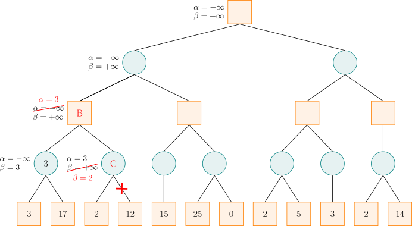
Za čvor C, budući da je rezultat lijevog djeteta \(2\), a čvor C je MIN čvor, vrijednost \(\beta\) mijenjamo u \(2\). Sad je \(\alpha \geq \beta\), pa preostalu djecu čvora C ne treba pretraživati, jer je sigurno da igrač Alpha ne bi dopustio da igra dođe do čvora C. Čvor C je MIN čvor i njegov je rezultat \(2\), što ne premašuje zabilježenu vrijednost \(\beta\) (slučaj 3 iz prethodnog teksta). Budući da su sva djeca čvora B pretražena, možemo izračunati da je rezultat čvora B \(3\), jednak zabilježenoj vrijednosti \(\alpha\) (slučaj 1 iz prethodnog teksta).
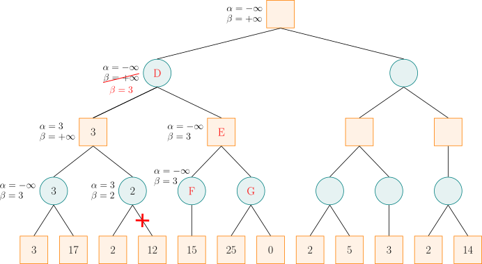
Nakon izračuna rezultata čvora B, budući da je čvor B dijete čvora D, možemo ažurirati vrijednosti \(\alpha\) i \(\beta\) čvora D. Čvor D je MIN čvor, pa vrijednost \(\beta\) mijenjamo u \(3\). Zatim čvor D prosljeđuje vrijednosti \(\alpha\) i \(\beta\) čvoru E, a čvor E čvoru F. Čvor F ima samo jedno dijete, s rezultatom \(15\); budući da je \(15\) veće od trenutne vrijednosti \(\beta\), a čvor F je MIN čvor, njegovu vrijednost \(\beta\) ne ažuriramo, a zatim možemo izračunati da je rezultat čvora F \(15\), veći od zabilježene vrijednosti \(\beta\) (slučaj 2 iz prethodnog teksta).
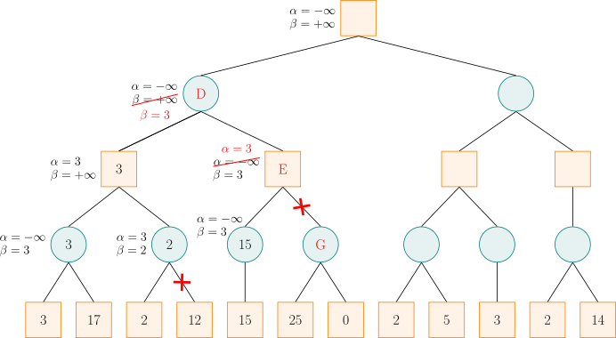
Nakon izračuna rezultata čvora F, budući da je čvor F dijete čvora E, možemo ažurirati vrijednosti \(\alpha\) i \(\beta\) čvora E. Čvor E je MAX čvor, pa ažuriramo vrijednost \(\alpha\); sad je \(\alpha \geq \beta\), pa možemo odsjeći preostale grane čvora E (tj. čvor G). Zatim, budući da je čvor E MAX čvor, rezultat čvora E postavljamo na \(15\), strogo veći od zabilježene vrijednosti \(\alpha\) (slučaj 3 iz prethodnog teksta). Vrijednošću \(\alpha\) čvora E ažuriramo vrijednost \(\beta\) čvora D, koja ostaje \(3\). Sad su sva djeca čvora D pretražena, pa možemo izračunati da je rezultat čvora D \(3\), jednak zabilježenoj vrijednosti \(\beta\) (slučaj 1 iz prethodnog teksta).
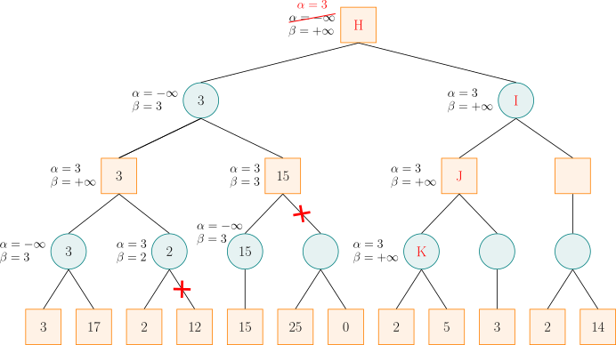
Nakon izračuna rezultata čvora D, budući da je čvor D dijete čvora H, možemo ažurirati vrijednosti \(\alpha\) i \(\beta\) čvora H. Čvor H je MAX čvor, pa ažuriramo \(\alpha\). Zatim, prema redoslijedu pretraživanja, vrijednosti \(\alpha\) i \(\beta\) čvora H prosljeđujemo redom čvorovima I, J, K. Za čvor K rezultat lijevog djeteta je \(2\), a čvor K je MIN čvor, pa ažuriramo \(\beta\); sad je \(\alpha \geq \beta\), pa možemo odsjeći preostale grane čvora K. Zatim rezultat čvora K postavljamo na \(2\), manji ili jednak zabilježenoj vrijednosti \(\beta\) (slučaj 3 iz prethodnog teksta).
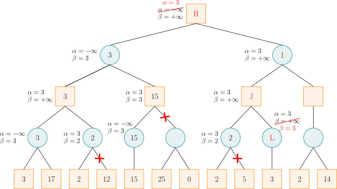
Nakon izračuna rezultata čvora K, budući da je čvor K dijete čvora J, možemo ažurirati vrijednosti \(\alpha\) i \(\beta\) čvora J. Čvor J je MAX čvor, pa ažuriramo \(\alpha\), ali budući da je rezultat čvora K manji od \(\alpha\), vrijednost \(\alpha\) čvora J ostaje \(3\). Zatim vrijednosti \(\alpha\) i \(\beta\) čvora J prosljeđujemo čvoru L. Budući da je čvor L MIN čvor, ažuriramo \(\beta = 3\); sad je \(\alpha \geq \beta\), pa možemo odsjeći preostale grane čvora L. Kako čvor L nema preostalih grana, ovdje zapravo nema odsijecanja. Zatim rezultat čvora L postavljamo na \(3\), manji ili jednak zabilježenoj vrijednosti \(\beta\) (slučaj 3 iz prethodnog teksta).
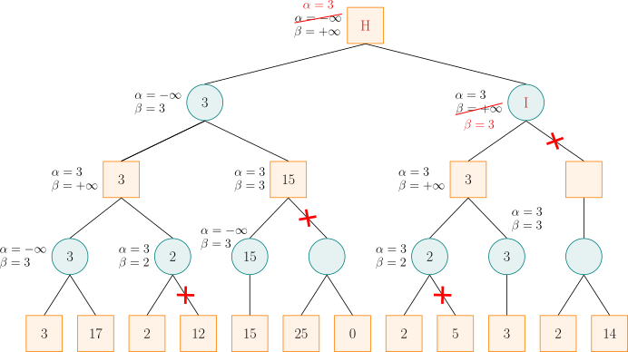
Nakon izračuna rezultata čvora L, budući da je čvor L dijete čvora J, možemo ažurirati vrijednosti \(\alpha\) i \(\beta\) čvora J. Čvor J je MAX čvor, pa ažuriramo \(\alpha\), ali budući da je rezultat čvora L manji ili jednak \(\alpha\), vrijednost \(\alpha\) čvora J ostaje \(3\). Sad su sva djeca čvora J pretražena, pa možemo izračunati da je rezultat čvora J \(3\), jednak zabilježenoj vrijednosti \(\alpha\) (slučaj 2 iz prethodnog teksta).
Nakon izračuna rezultata čvora J, budući da je čvor J dijete čvora I, možemo ažurirati vrijednosti \(\alpha\) i \(\beta\) čvora I. Čvor I je MIN čvor, pa ažuriramo \(\beta\); sad je \(\alpha \geq \beta\), pa možemo odsjeći preostale grane čvora I. Vrijedi primijetiti da je, zbog postojanja desnog djeteta, stvarni rezultat čvora I \(2\), manji od zabilježene vrijednosti \(\beta\) (slučaj 3 iz prethodnog teksta).
Nakon izračuna rezultata čvora I, budući da je čvor I dijete čvora H, možemo ažurirati vrijednosti \(\alpha\) i \(\beta\) čvora H. Čvor H je MAX čvor, pa ažuriramo \(\alpha\), ali budući da je rezultat čvora I manji ili jednak \(\alpha\), vrijednost \(\alpha\) čvora H ostaje \(3\). Sad su sva djeca čvora H pretražena, pa možemo izračunati da je rezultat čvora H \(3\), jednak zabilježenoj vrijednosti \(\alpha\) (slučaj 1 iz prethodnog teksta).
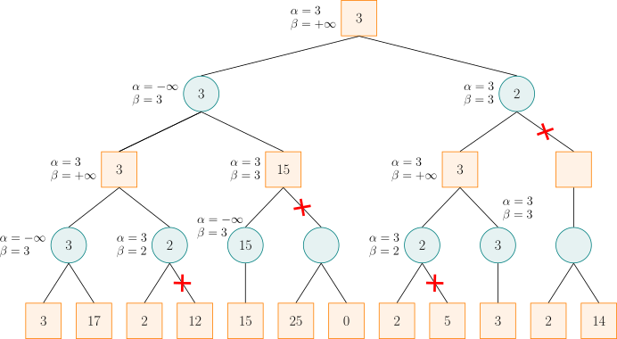
To je konačni rezultat.
Implementacija
Primjer koda
int alpha_beta(int u, int alph, int beta, bool is_max) {
if (!son_num[u]) return val[u];
if (is_max) {
for (int i = 0; i < son_num[u]; ++i) {
int d = son[u][i];
alph = max(alph, alpha_beta(d, alph, beta, !is_max));
if (alph >= beta) break;
}
return alph;
} else {
for (int i = 0; i < son_num[u]; ++i) {
int d = son[u][i];
beta = min(beta, alpha_beta(d, alph, beta, !is_max));
if (alph >= beta) break;
}
return beta;
}
}
Literatura i bilješke
Dio ovog članka preuzet je iz blog-zapisa Detaljno o algoritmu Minimax i α-β odsijecanju – 文剑木然 (kineski), pod licencijom CC 4.0 BY-SA. Sadržaj je izmijenjen.
Contents
This page briefly introduces the Minimax algorithm and alpha–beta pruning.
Minimax algorithm
The Minimax algorithm, also called the minimizing-maximum algorithm, is an algorithm that minimizes the potential loss in the worst (i.e., maximum-loss) scenario.
Procedure
In two-player zero-sum games with fully determined positions, adversarial search is often required: a search tree is built in which every node is a determined state. On odd levels it is our turn to move, and on even levels it is the opponent's turn. Every leaf of the search tree is assigned an evaluation; the larger the evaluation, the better our chances of winning. We pursue better chances, while the opponent tries to reduce our chances; in the search tree this means that nodes on odd levels (our nodes) always choose the child state with the best chances, while nodes on even levels (the opponent's nodes) always choose the child state with the worst chances (for us).
The Minimax algorithm traverses the search tree from top to bottom, uses the information from subtrees to update the answer while backtracking, and finally obtains the value of the root — this is the maximum score we can achieve when both sides play optimally.
Example
Let us look at a simple example.
Call us MAX and the opponent MIN; the picture is as follows:
For example, in the following situation, assume we search from left to right and the value at the root is our chance of winning:
We should choose the middle route. If we choose the left route, the worst chance is \(3\); if we choose the middle route, the worst chance is \(15\); if we choose the right route, the worst chance is \(1\). Although the right route may offer a chance of \(22\), a sufficiently rational opponent will leave us with a chance of only \(1\). After weighing the options, the middle route is clearly better.
In fact, when looking at the right route, once we find that the chance may be \(1\), we no longer need to look at the branches with chances \(12\), \(20\), and \(22\). Compared with the chances of the two routes on the left, we can already be sure that the right route is not the best.
The naive Minimax algorithm often has to build a huge search tree, making the time and space complexity unbearable. Alpha–beta pruning is a method that optimizes Minimax by pruning with the lower and upper bounds of both sides' scores at every node of the search tree.
Note that in different problems, the values at the nodes of the search tree have different meanings: they can be evaluations, scores, winning probabilities, and so on. For convenience, below we uniformly call them scores.
Alpha–beta pruning
Alpha–beta pruning is search pruning for the Minimax algorithm.
Procedure
In the Minimax algorithm, if the scores of all children of a node are known, the score of that node can be computed: for a MAX node take the maximum score, and for a MIN node take the minimum score.
When the search reaches a node but has not yet finished it, we cannot compute the score of that node, but we can compute the range of both sides' scores among the nodes searched so far. During the search we maintain two variables, \(\alpha\) and \(\beta\), which denote the lower and upper bounds of the scores that, when the game reaches this node and considering all nodes searched so far, the Alpha player (the side seeking the maximum score) and the Beta player (the side seeking the minimum score) can guarantee, respectively.
The pruning strategy of alpha–beta pruning depends on the values of \(\alpha\) and \(\beta\) when searching the current node. If the current node is a MAX node, the Alpha player can continue searching its children to raise the lower bound \(\alpha\) of the score. However, if after some search we already have \(\alpha\ge\beta\), continuing to search this node will not affect the result of the game: once this node is reached, the Alpha player can guarantee a score of at least \(\alpha\); but the Beta player already knows a strategy (deviating from the current path) that guarantees a score of at most \(\beta\le\alpha\), so the Beta player has no reason to let the game reach the current node. Similarly, if the current node is a MIN node and, after searching one of its children, we already find that \(\beta\le\alpha\) holds at this node, then there is likewise no need to search the other children, because the Alpha player has no reason to let the game enter the current node. Summarizing both cases: when \(\alpha \geq \beta\), the remaining branches of this node need not be searched (that is, pruning can be performed). Note that pruning is also possible when \(\alpha = \beta\), because the opponent already has an alternative that guarantees a score no worse for them than \(\alpha\) (i.e., \(\beta\)), and continuing to search the remaining branches will not change the result at the nodes above.
During the search, there is no need to maintain node scores; it suffices to maintain \(\alpha\) and \(\beta\). Initially, let \(\alpha=-\infty,~\beta=+\infty\). When searching downward, the information in \(\alpha\) and \(\beta\) is passed down as well, to record the alternatives of both players.
After a child has been searched, the information at the current node must be updated. Suppose the current node \(X\) is a MAX node and we have just finished searching its child \(Y\). Then the \(\beta\) value at node \(X\) does not change; only the \(\alpha\) value needs to be updated with the maximum of itself and the score of child \(Y\). If child \(Y\) is a leaf, directly update the \(\alpha\) value at the current node \(X\) with the score of child \(Y\); otherwise, it suffices to update the \(\alpha\) value of the current node \(X\) with the \(\beta\) value of child \(Y\). There are three possibilities:
- The \(\beta\) value of child \(Y\) lies strictly between the \(\alpha\) and \(\beta\) values of node \(X\). Since child \(Y\) inherited the \(\alpha\) value of node \(X\) and does not update it, after searching child \(Y\) we still have \(\beta > \alpha\), which means that no pruning occurred while searching child \(Y\). The final \(\beta\) value of child \(Y\) equals the minimum of the \(\beta\) value inherited from node \(X\) and the scores of all children of \(Y\). Since this minimum is strictly smaller than the \(\beta\) value of node \(X\), it must be the minimum score among all children of child \(Y\). Therefore, as a MIN node, the score of child \(Y\) is exactly this \(\beta\) value. Using it to update the \(\alpha\) value of node \(X\) is justified.
- The \(\beta\) value of child \(Y\) equals the \(\beta\) value of node \(X\). As described above, this means that the scores of all children of child \(Y\) are no smaller than the \(\beta\) value of node \(X\). This further means that the Beta player has no reason to let the game enter node \(X\): as soon as the Alpha player chooses child \(Y\), the Beta player cannot obtain a score lower than \(\beta\). Therefore, updating the \(\alpha\) value of node \(X\) with the \(\beta\) value of child \(Y\) in this case serves to make \(\alpha=\beta\) at node \(X\), triggering the pruning condition. Its effect is the same as updating the \(\alpha\) value of node \(X\) with the actual score at \(Y\) — a number greater than or equal to the \(\beta\) value at node \(X\).
- The \(\beta\) value of child \(Y\) is less than or equal to the \(\alpha\) value of node \(X\). In this case child \(Y\) triggered the pruning condition; its actual score does not exceed the \(\beta\) value of child \(Y\), let alone the \(\alpha\) value of node \(X\). Updating the \(\alpha\) value of node \(X\) with the actual score of child \(Y\) does not change the \(\alpha\) value. This has the same effect as updating the \(\alpha\) value of node \(X\) with the \(\beta\) value of child \(Y\).
This analysis shows that after the search of some child is complete, only in the first case does \(\alpha\) (or \(\beta\)) accurately record the actual score of that child as a MAX node (or MIN node). In the other cases, although it is not necessarily the accurate score, the information it provides is sufficient to guarantee that pruning is performed correctly, and thus does not affect the score recorded at the root.
Example
This section analyzes an example to show how the \(\alpha\) and \(\beta\) values at each node are updated during the search. Along the way, the scores of the nodes involved are computed as well. This lets us observe the relationship between the actual score at each node and the recorded \(\alpha\) and \(\beta\) values. Note, however, that when implementing this algorithm, the actual scores of these nodes are not computed.
For the following situation, assume we search from left to right:
At initialization, let \(\alpha = -\infty,~\beta = +\infty\), and pass this information down along the search path.
When the search reaches node A, since the score of the left child is \(3\) and node A is a MIN node trying to find a move with a smaller score, the \(\beta\) value is changed to \(3\), because \(3\) is less than the current \(\beta\) value (\(\beta = +\infty\)). Then the score of the right child of node A is \(17\); the \(\beta\) value of node A is not changed now, because \(17\) is greater than the current \(\beta\) value (\(\beta = 3\)). Now all children of node A have been searched, so the score of node A can be computed as \(3\), which agrees with the \(\beta\) value recorded at this node (case 1 above).
Node A is a child of node B; after computing the score of node A, the \(\alpha\) and \(\beta\) values of node B can be updated. Since node B is a MAX node trying to find a move with a larger score, the \(\alpha\) value is changed to \(3\), because the \(\beta\) value at child A (\(\beta=3\)) is greater than the current \(\alpha\) value (\(\alpha = -\infty\)). Then the right child C of node B is searched, and the \(\alpha\) and \(\beta\) values of node B are passed to node C.
For node C, since the score of the left child is \(2\) and node C is a MIN node, the \(\beta\) value is changed to \(2\). Now \(\alpha \geq \beta\), so the remaining children of node C need not be searched, because we can be sure that the Alpha player will not allow the game to reach node C. Node C is a MIN node, and its score is \(2\), not exceeding the recorded \(\beta\) value (case 3 above). Since all children of node B have been searched, the score of node B can be computed as \(3\), the same as the recorded \(\alpha\) value (case 1 above).
After computing the score of node B, since node B is a child of node D, the \(\alpha\) and \(\beta\) values of node D can be updated. Since node D is a MIN node, the \(\beta\) value is changed to \(3\). Then node D passes the \(\alpha\) and \(\beta\) values to node E, and node E passes them on to node F. Node F has only one child, with score \(15\); since \(15\) is greater than the current \(\beta\) value and node F is a MIN node, its \(\beta\) value is not updated, and then the score of node F can be computed as \(15\), greater than the recorded \(\beta\) value (case 2 above).
After computing the score of node F, since node F is a child of node E, the \(\alpha\) and \(\beta\) values of node E can be updated. Node E is a MAX node, so the \(\alpha\) value is updated; now \(\alpha \geq \beta\), so the remaining branches of node E (i.e., node G) can be pruned. Then, since node E is a MAX node, the score of node E is set to \(15\), strictly greater than the recorded \(\alpha\) value (case 3 above). Using the \(\alpha\) value of node E to update the \(\beta\) value of node D leaves it at \(3\). Now all children of node D have been searched, so the score of node D can be computed as \(3\), equal to the recorded \(\beta\) value (case 1 above).
After computing the score of node D, since node D is a child of node H, the \(\alpha\) and \(\beta\) values of node H can be updated. Node H is a MAX node, so \(\alpha\) is updated. Then, following the search order, the \(\alpha\) and \(\beta\) values of node H are passed in turn to nodes I, J, K. For node K, the score of its left child is \(2\), and node K is a MIN node, so \(\beta\) is updated; now \(\alpha \geq \beta\), so the remaining branches of node K can be pruned. Then the score of node K is set to \(2\), less than or equal to the recorded \(\beta\) value (case 3 above).
After computing the score of node K, since node K is a child of node J, the \(\alpha\) and \(\beta\) values of node J can be updated. Node J is a MAX node, so \(\alpha\) is updated, but since the score of node K is less than \(\alpha\), the \(\alpha\) value of node J stays at \(3\). Then the \(\alpha\) and \(\beta\) values of node J are passed to node L. Since node L is a MIN node, \(\beta = 3\) is updated; now \(\alpha \geq \beta\), so the remaining branches of node L can be pruned. Since node L has no remaining branches, no actual pruning happens here. Then the score of node L is set to \(3\), which is less than or equal to the recorded \(\beta\) value (case 3 above).
After computing the score of node L, since node L is a child of node J, the \(\alpha\) and \(\beta\) values of node J can be updated. Node J is a MAX node, so \(\alpha\) is updated, but since the score of node L is less than or equal to \(\alpha\), the \(\alpha\) value of node J stays at \(3\). Now all children of node J have been searched, so the score of node J can be computed as \(3\), which equals the recorded \(\alpha\) value (case 2 above).
After computing the score of node J, since node J is a child of node I, the \(\alpha\) and \(\beta\) values of node I can be updated. Node I is a MIN node, so \(\beta\) is updated; now \(\alpha \geq \beta\), so the remaining branches of node I can be pruned. It is worth noting that, because of the existence of the right child, the actual score of node I is \(2\), less than the recorded \(\beta\) value (case 3 above).
After computing the score of node I, since node I is a child of node H, the \(\alpha\) and \(\beta\) values of node H can be updated. Node H is a MAX node, so \(\alpha\) is updated, but since the score of node I is less than or equal to \(\alpha\), the \(\alpha\) value of node H stays at \(3\). Now all children of node H have been searched, so the score of node H can be computed as \(3\), which equals the recorded \(\alpha\) value (case 1 above).
This is the final result.
Implementation
Sample code
int alpha_beta(int u, int alph, int beta, bool is_max) {
if (!son_num[u]) return val[u];
if (is_max) {
for (int i = 0; i < son_num[u]; ++i) {
int d = son[u][i];
alph = max(alph, alpha_beta(d, alph, beta, !is_max));
if (alph >= beta) break;
}
return alph;
} else {
for (int i = 0; i < son_num[u]; ++i) {
int d = son[u][i];
beta = min(beta, alpha_beta(d, alph, beta, !is_max));
if (alph >= beta) break;
}
return beta;
}
}
References and notes
Parts of this article are taken from the blog post Minimax Algorithm and α-β Pruning Explained – 文剑木然 (Chinese), licensed under CC 4.0 BY-SA. The content has been modified.